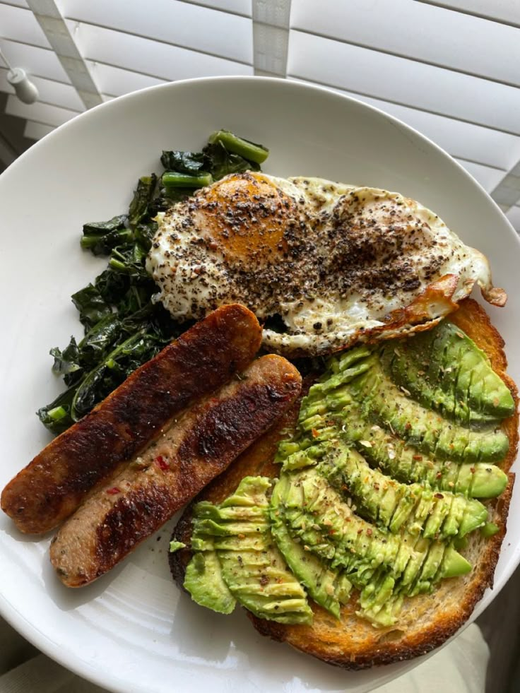

Main Page
Breakfast Recipe

Power Breakfast Plate with Eggs, Spinach, Chicken Sausage & Avocado
This no-fuss breakfast delivers a perfect balance of protein, healthy fats, and energizing carbs — all in under 10 minutes. Fluffy scrambled eggs wilted with fresh spinach, crispy chicken sausage links, creamy avocado, and a slice of hearty sourdough come together for a nourishing, satisfying meal.
Whether you're fueling up for a workout or starting a busy day, this breakfast plate is built to keep you full and focused. It's simple enough for everyday mornings, yet feels like something you'd order at your favorite café.
Ingredients
- 3 Eggs
- 1/2 Avocado
- 4 Chicken Sausage Links
- 2 Cups of Spinach
- 1 Piece of Sourdough Bread
Steps
- Cook the sausage: In a skillet over medium heat, add a splash of oil if needed and cook the chicken sausage links according to package directions until browned and heated through. Remove and set aside.
- Scramble the eggs: In the same pan, reduce heat to medium-low. Crack in the eggs and stir gently with a spatula. Add the spinach just as the eggs start to set, letting it wilt into the scramble. Season with salt and pepper.
- Toast the sourdough: While the eggs cook, toast the sourdough slice to your liking.
- Plate everything: Arrange the scrambled eggs with spinach, chicken sausage, avocado slices, and sourdough toast on a plate
- Serve warm with optional chili flakes, a drizzle of olive oil, or hot sauce for extra flavor.